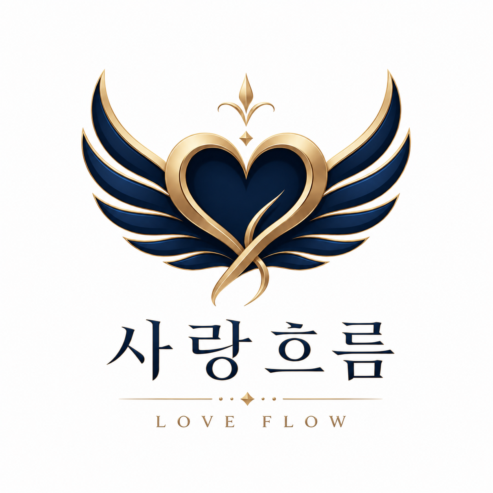

사랑흐름
LOVE FLOW
많은 관계는 사랑이 부족해서가 아니라,
서로의 언어를 몰라서 멀어집니다
서로의 언어를 몰라서 멀어집니다
✦ 사랑은 멈추지 않고, 흐릅니다
사랑흐름은 당신의 관계 흐름을 읽고,
서로 다른 마음의 언어를 번역해
멀어진 사이에 다시 길을 내어주는
관계 회복의 나침반입니다.
서로 다른 마음의 언어를 번역해
멀어진 사이에 다시 길을 내어주는
관계 회복의 나침반입니다.
한 관계가 회복되면,
그 변화는 또 다른 관계로 번집니다.
한 송이 꽃이 피면, 세상의 봄이 시작되듯이.
마음 지도 펼치기 무료
그 변화는 또 다른 관계로 번집니다.
한 송이 꽃이 피면, 세상의 봄이 시작되듯이.
당신의 관계엔 지금, 어떤 흐름이 흐르고 있을까요?